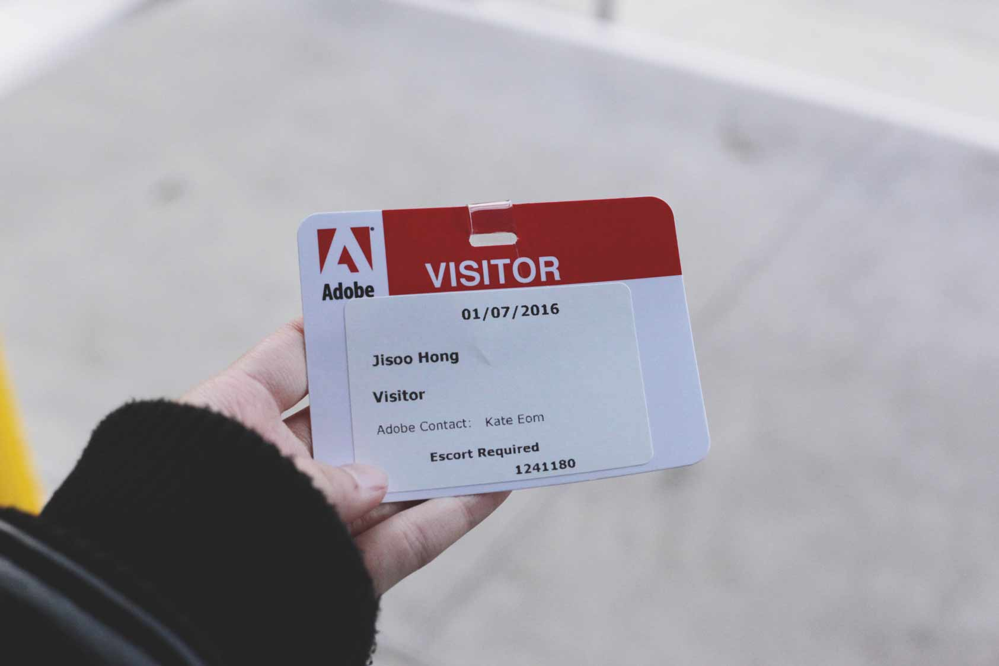

아테커들에겐 포토샵, 프리미어 등의 크리에이티브 툴로 너무나도 친숙한 어도비(Adobe) 사(社). 바로 이곳에서 엄고운 선배님(전자공학, 99)은 지난 해 7월부터 PM으로 활동하고 있다. 공간 431 팀은 엄고운 선배님의 입을 통해 우리에겐 다소 생소한 PM이라는 직무에 대한 소개와 어도비의 이모저모, 그리고 해외 취업 등에 관한 다양한 이야기를 들어 보았다.
안녕하세요! 저희는 서강대 Art&Technology학과 재학생들로 이루어진 공간 431 팀입니다. 회사 어도비에 대한 소개를 잠깐 부탁드려도 될까요?
반갑습니다. 어도비에는 크게 두 가지 사업부가 있어요. 디지털 미디어 사업부와 디지털 마케팅 사업부에요. 디지털 미디어 사업부는 보통 여러분들이 잘 아는 포토샵, 일러스트 등이 포함된 크리에이티브 클라우드를 만들고 있고요. 어도비에서 다양한 사업 모델을 구상하며 디지털 마케팅 사업을 시작했어요. 디지털 마케팅은 쉽게 설명하자면 웹 사용자 개개인에게 맞춤형 광고를 보여주는 거에요. 아마존이나 지마켓 같은 웹 커머스 사이트를 예를 들어보면, 사용자가 어떤 경로로 웹 사이트에 유입을 했고, 무엇을 검색했으며, 얼마나 오랫동안 웹페이지에 머물렀는지, 어떤 물품을 장바구니에 담고 최종적으로 어떤 것을 결제했는지 등을 종합적으로 트래킹해서 그 사용자에게 가장 효과가 있을 광고를 선택적으로 보여주는 것이죠. 저는 이 디지털 마케팅 사업부에서 PM 일을 하고 있어요.

PM이라는 직업은 조금 낯설게 느껴지는데요, 구체적으로 어떤 일을 하시는지 궁금합니다.
PM이 하는 일은 한국과 비교하면 상품 기획과 비슷해요. 프로젝트 단위에서 상품과 관련하여 새로운 목표를 세우고 이를 디자이너, 엔지니어 사이에서 조율하며 이뤄나가는 거죠. 제가 지금 맡고 있는 제품은 어도비의 디지털 마케팅 제품과 다른 마케팅 파트너 제품을 연결해주는 서비스에요. 예를 들어서 아메리칸 익스프레스(American Express) 같은 회사가 저희 어도비 제품을 사용하고 있지만, 타사 마케팅 제품을 함께 쓰고 있거든요. 이럴 경우, 고객 회사 입장에서는 저희 제품과 타사 제품이 서로 연동이 되어야 편리하죠. 저는 그걸 용이하게 해주는 서비스 관련 일을 맡고 있어요. 기존 서비스가 좀 오래되어서 개선해야 할 점이 많거든요. 고객 사가 어떤 정보를 원하는 지, 어떤 것을 필요로 하는 지 등을 파악해서 무엇을 고쳐야 할 지 정하는 일을 하고 있어요. 그러기 위해선 관련 부서와 굉장히 협업을 많이 해요. 제품과 관련해서 상품 기획단, 엔지니어, 디자이너 뿐만 아니라 파이낸스 팀, 법무팀과도 만나서 이야기를 하죠.
그렇군요! 어도비 하면, 보통 크리에이티브 툴을 생각하게 되는데 디지털 마케팅이라는 생소한 분야에도 많은 투자를 하고 있네요.
네. 포토샵 같은 경우는 마이크로소프트의 윈도우 보다도 더 불법 카피가 많대요. 그래서 몇년간 어도비 성장이 정체 되었나봐요. 그러다 보니까, 크리에이티브 툴이라는 파이를 키우던지 아니면 다른 성장 동력을 찾아야 하는 상황이 된 거죠. 오라클이나 어느 정도 규모가 되는 소프트웨어 회사들은 다 디지털 마케팅 쪽에 뛰어들고 있는 추세에요. 미국 내에서 굉장히 많이 성장하고 있는 분야이거든요. 어도비도 기업을 대상으로 이런 B2B 엔터프라이즈 소프트웨어를 팔고 있어요. 사실 우리나라 대기업 같은 경우는 외부 툴을 사용하는 걸 안 좋아하죠. 삼성은 삼성대로, LG는 LG대로, 다 자체적으로 만든 시스템을 쓰려고 해요. 그래서 큰 B2B 회사가 업죠. 미국은 그렇지가 않아요. CRM과 관련한 마케팅 툴이 있으면 기업들이 그걸 사서 쓰는 방식이죠. 어도비도 소프트웨어 업체지만, 인사관리나 직원들 페이 관련한 것은 다 외부 프로그램을 사서 쓰거든요.
국내 소프트웨어 시장 환경이 미국과는 많이 다른가 보네요. 이제 선배님에 대해서 질문을 드리고 싶어요! 어떻게 해외 취업을 생각하게 되셨는지 궁금합니다.
저 같은 경우는 해외 취업은 생각도 하지 않았어요. 서강대를 졸업하고 난 후, 독일에서 반 년 정도 인턴십을 한 적이 있지만 그 뒤 한국에 돌아와서 삼성에 입사해서 10년 정도 일을 했거든요. 처음엔 무선사업부에서 엔지니어로 일하다가 1년 뒤부터 비즈니스 쪽으로 업무가 바뀌었어요. 삼성에서 일을 할 때 주변에 해외에서 석박사를 따고 온 사람들이 많이 있었어요. 하지만, 결국 그 분들도 저랑 똑 같은 일을 하고 있는 거에요. 그런 상황에서 딱히 시간과 돈을 들여서 유학을 가야겠다는 생각이 들지가 않았고, 또 그 분들도 이야기를 들어보면 비자나 언어 문제 등으로 해외 취업을 포기 했더라고요. 그러다가 삼성에서 마지막 3년 반 정도 글로벌 전략실이라는 곳에서 일을 하게 되었어요. 부서원의 90퍼센트가 외국인이었고, 나머지 한국인들도 외국에서 MBA를 한 사람들이었죠. 그 분들이 저에게 해외 MBA에 도전해보는 걸 추천했어요. ‘한번 도전해볼까?’하는 마음에 토플이며 GMAT이며 에세이며 찾아보게 되었어요. 그러다가 미국에서 MBA를 따고 그곳에서 취업한 사람들을 아름아름 알게 된 거에요. 그러면서 깨달았던 게 ‘삼성에서의 샘플링이 잘못 되었구나. 내가 만났던 사람들은 그곳에서 적응하지 못했던 사람이구나’ 였죠. 물론 많은 변수들이 있어 보이긴 했지만, 본인의 노력 여하에 따라 해외 취업에 성공할 수 있다는 걸 알게 되었고, 그래서 도전하게 되었어요.
해외 취업 과정에서 어려운 점은 없으셨나요?
바로 취업을 했다면 분명 힘든 일이 많았을 거에요. 하지만 미국에서 MBA를 따며 도움을 크게 받았어요. MBA 같은 경우는 회사에서 따로 리크루팅 규모를 배정하거든요. 또, 학교로 별도 채용 오퍼가 오기 때문에 취업에 있어서 좋은 채널이 되었어요. 또 미국 회사는 한국 회사와 채용 과정이 다르거든요. 학교를 다니면서 이런 부분과 관련해서 레쥬메를 쓰는 방법이라던지 인터뷰 준비 같은 것들에서 도움을 받을 수가 있었어요. 한국인들이 미국 취업 중 겪는 어려움 중 하나가 비자 문제인데, 저 같은 경우는 지금 학생 비자로 일을 하고 있고요. 매년 4월에 회사에서 취업 비자를 신청해주는데, 추첨 과정에서 불합격할 경우 미국 외의 다른 어도비 오피스로 잠시 배정되고 일정 시간이 지나면 다른 비자를 통해서 다시 미국으로 들어올 수가 있어요. 분명 미국 취업과 관련해서 비자나 언어 문제 등 어려움이 존재하는 것 같아요. 하지만, 그런 문제 때문에 지레 겁 먹고 아예 시작조차 하지 않는다면 너무 아까울 것 같아요. 지금 한국 내 취업 시장이 굉장히 좋지 않다고들 말하는데, 그렇다면 해외 취업도 하나의 대안이 될 수 있을 것 같아요.
한국에서 이미 자리를 잡고 계신 상황에서 해외 취업에 뛰어든다는 건 선배님께도 큰 도전이 되었을 것 같아요. 한편, 한국 회사에서 10년 이상 다니셨는데, 미국 회사의 특징이 무엇이라고 생각하시나요?
저도 여기서 일을 한 지 얼마 되지 않아서 섣불리 말하긴 힘들지만, 이곳은 한국 회사보다 조금 더 합리적으로 일이 처리가 되는 것 같아요. 한국 회사는 위계질서가 심해서 윗 사람들에게 보고하는 형식에 신경을 많이 쓰거든요. 무조건 모여서 서로 얼굴 보고 회의를 해야하는 등 말이에요. 하지만 여기는 화상 회의가 보편적이죠. 또, 성평등에 대한 인식도 훨씬 높은 것 같아요. 삼성에서는 어쨌든 여자 임원 숫자가 너무 적고, 또 나이가 있으신 분들은 여전히 은연중에 여직원들에게 무시하는 태도를 보이거든요. 성희롱에 대한 개념도 흐릿했고요. 하지만, 여긴 그렇지가 않죠. 또 다른 점이라면 미국 회사에서는 회의 시간에 아주 적극적이어야 한다는 점이에요. 한국에서는 정말 좋은 아이디어가 아니면 차라리 입 다물고 있는 게 좋다고 여겨지는데, 이곳에서는 다들 아무런 말을 하지 않는 게 멍청한 얘기를 하는 것보다 오히려 못한 것으로 생각하거든요.
그렇군요! 미국 취업에 대한 꿈이 점점 자라나고 있는 것 같아요!
(웃음) 장단점이 다 있는 것 같아요. 한국 회사에서는 타이트하게 일을 배울 수가 있다는 장점이 있거든요. 여러분들도 본인의 전문 분야를 정하고, 그것과 관련한 경력을 쌓는다면 한국이든 미국이든 옮겨갈 수 있을 거에요. 자신이 관심이 있고, 가능성이 있다고 생각되는 업무에 도전해보세요!
알맹이가 꽉꽉 찬 이야기, 정말 감사드립니다. 훗날 꼭 미국에서 뵐 수 있으면 좋겠어요.
네! 그럼요. 미국에서 좋은 경험 얻어가시길 바라요!